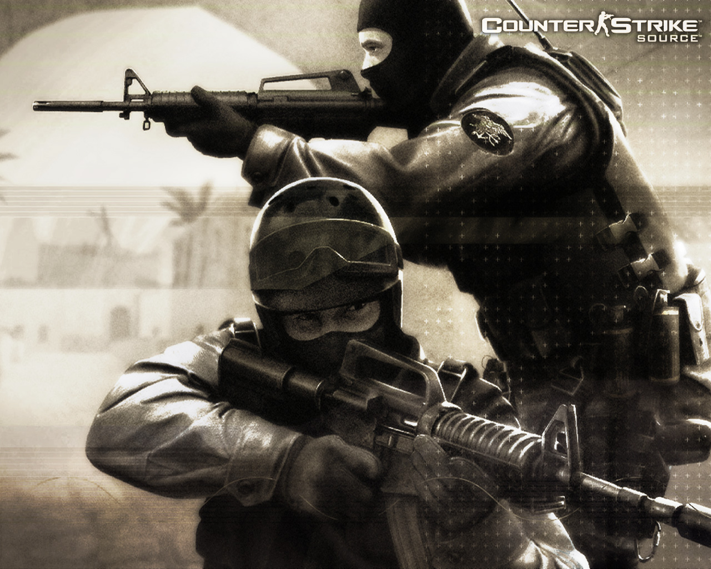

Minecraft
es un videojuego de pago de construcción de tipo «mundo abierto» o en
inglés sandbox creado originalmente por el sueco Markus Persson, que creo posteriormente Mojang
Studios
Comprar:Minecraft

Terraria
es un videojuego de acción, aventura y de sandbox producido de forma independiente por el estudio Re-Logic. Tiene características tales como la exploración, la artesanía, la construcción de estructuras y el combate.Se lanzó el 16 de mayo de 2011EL Lore de Terraria
En el link esta el lore El Lore de terraria
La pagina principal Mas Informacion aca

Tmodloader
(TML) es una modificación para el juego de PC Terraria que te permite instalar y usar otras modificaciones que mejoran el juego. TML está diseñado para facilitar el proceso de instalación y administración de mods, además de brindar herramientas para crear sus propios mods.Descargar: tModLoader
Informacion de Mods
Left 4 Dead
De la mano de Valve llega Left 4 Dead, un juego cooperativo de acción y terror en el que hasta cuatro jugadores se enfrentan a hordas de zombis y a terroríficos monstruos mutantes en una épica lucha por la supervivencia.Descargar:Left 4 Dead
Left 4 Dead 2
es un videojuego de disparos en primera persona cooperativo de tipo videojuego de terror creado por la compañía Valve. Es la secuela de Left 4 Dead y se lanzó al mercado el 17 de noviembre de 2009 en Estados Unidos y América. En Europa llegó tres días después, el 20 de noviembreDescargar:Left 4 Dead 2

Counter-Strike
es una serie de videojuegos multijugador de disparos en primera persona tácticos en los que equipos de terroristas luchan para perpetrar un acto de terror mientras que los antiterroristas intentan prevenirlo. La serie comenzó en Windows en 1999 con el lanzamiento del primer videojuego, Counter-StrikeDescargar: Counter-Strike 
Roblox
Roblox es una plataforma de videojuegos multijugador y de creación de videojuegos en línea donde los usuarios pueden crear y compartir sus propios mundos virtuales con el sistema de creación de juegos llamado Roblox Studio desarrollado por Roblox Corporation y disponible en ordenadoresPagina principal: Roblox

Ark: Survival Evolved
es un videojuego de acción-aventura y supervivencia desarrollado por Studio Wildcard, Instinct Games, Efecto Studio y Virtual Basement. Lanzado oficialmente el 29 de agosto de 2017 para Windows, Xbox One, Nintendo Switch, PlayStation 4, IOS y AndroidDescargar :ArK